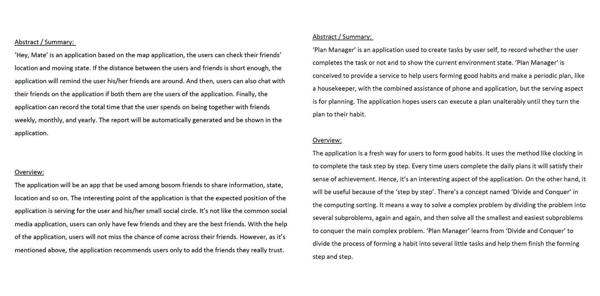
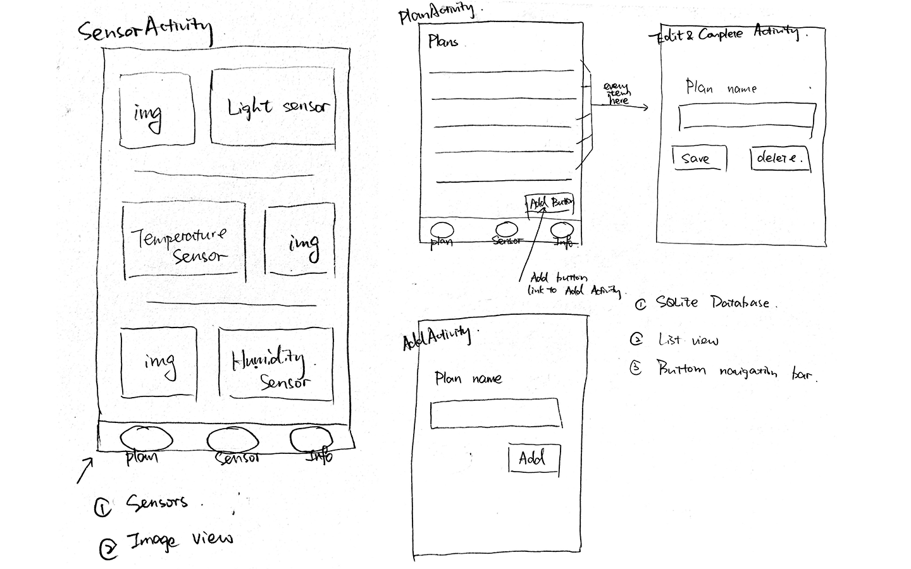
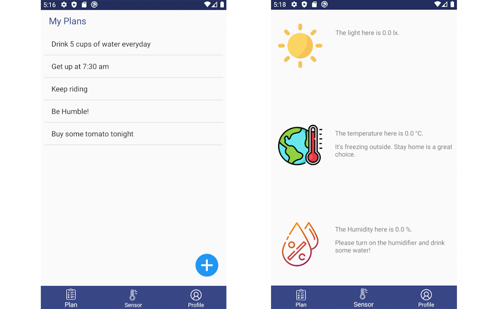

12:00


Project - Manager
- Introduction:
- ‘Manager’ is an application aim to provide the service to help the user to remember the petty things. Besides, it can also detect the environment surrounding and give related suggestions to users according to detected information. In sum, it’s designed to improve users’ efficiency of work and study.
- Role:
- designer and developer
- Teammate:
- Me
- Project scope:
- 6-week student project
- Tool:
- Android Studios
Brainstorms:
The first challenge of the project was how to mix all the requirements and get a whole application, but not just put different unrelated functionalities together. For this challenge, I prepared three version of proposals.
Research:
When the proposal was determined, I started to look for the layout of related applications and the layouts of common Activity, like login, register, profiles. With the help of them, I tried to unify my own style. Hence, I went on to draw some sketches.
Draft Sketch:
Doing sketches is an important step before I started to do my coding work. With the drafts, I could know how many activities would be in my application, how the activities and Java classes work with each other, and required functionalities were met in which activities.
Coding and Debugging:
Coding is a funny process which can bring us senses of achievement, except meeting bugs. During the processing of coding, I met countless problems caused by various reasons, like the difference between Windows and Mac, the different versions of tutorials online and mine, and so on. However, it’s also an amazing experience when the debugging was done.
Final Results:
After 6 weeks‘ hard work, my application was completed. Users can use the application to record what they want to remember. In addition, it can also detect the environment nearby and give suggestions to users according to the detected values.
Challenge:
As I mentioned above, the problem I met during my brainstorm step was the first challenge. And then, I spent a great amount of time on the part of SQLite database. To solve related problems, I watched two series of tutorial videos. Because of it, I knew that I should continue to learn more and practice more.